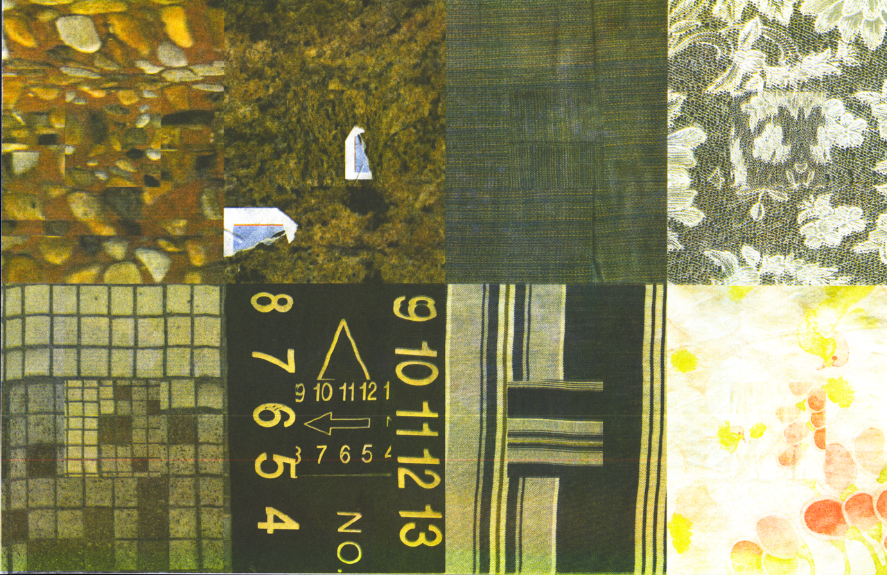

Risograph is a stencil-based printing machine built upon the CMYK process. This printer,specifically the RISD Graphic Design department's, has a mind and attitude of its own. Miss. Print (that is her name) will not always align the layers or print them correctly. But that is what I enjoy most about the process and making.

Risograph Gif, 2024

Flat scan of Risograph Zine, 2026